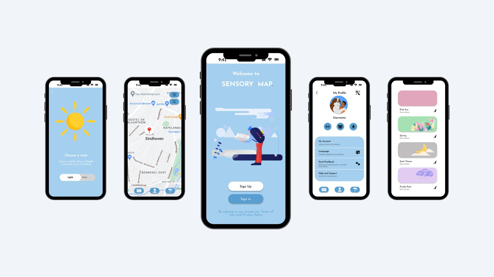

UX research · App concept · Inclusive design
← Back to workSensory Map App
A mobile app concept that helps autistic and sensory-sensitive adults discover calmer, more predictable public spaces using sensory data.

The challenge
Show not only where a place is, but how it might feel.
Many autistic and sensory-sensitive people experience public spaces differently because of noise, light, crowds, and unpredictability.
This project explores how a navigation app could support planning, confidence, and personal comfort through sensory filters and user-generated reviews.
Starting from sensory needs, not features
I explored the daily challenges of autistic and sensory-sensitive adults, especially around unpredictable noise, lighting, crowds, and public spaces.
Desk research showed that most navigation tools focus on distance and ratings, but not on how a place might feel for someone with sensory sensitivities.
Core question
What if navigation apps showed how a place might feel?
Design gap
Existing tools rarely support sensory predictability.

Designing for predictability and control
Personas focused on sensory needs, routines, coping strategies, and emotional states rather than generic demographics.
Expert feedback reinforced the importance of customisation, dark mode, GPS-based prompts, and clear sensory indicators.

Turning research into a map concept
I translated the research into features such as colour-coded sensory pins, personal sensory profiles, GPS alerts, sensory reviews, filters, and theme options.
The flow was intentionally kept predictable: sign up, set preferences, allow GPS, open the map, filter locations, and read or leave reviews.
Map pins
Show noise, light, and crowd intensity at a glance.
Profiles
Let users personalise sensitivities and comfort levels.
Alerts
Warn users before entering overwhelming areas.

Creating a calm and readable interface
I iterated through several visual directions before choosing a light-blue system that balanced calmness, contrast, and readability.
The interface followed accessibility principles such as clear hierarchy, predictable layouts, simple icons with labels, minimal animation, and customisable themes.

Validating the concept with users and experts
I tested the prototype with autistic students using observation, think-aloud, and post-session interviews. An autism expert also reviewed the concept.
Testing confirmed that the concept felt useful and supportive, especially because users could customise themes and receive prompts around overwhelming places.
- Participants found the flow clear and predictable.
- Theme customisation was seen as valuable.
- GPS prompts near pinned places felt useful.
- Feedback led to stronger contrast and dark mode as a core option.

Outcome
A research-based app concept connecting inclusive design and technical exploration.
The project helped me turn autism and sensory research into practical design decisions, while also exploring how map APIs and a React prototype could support the concept.
It strengthened my interest in accessible, research-driven design that supports people in everyday situations.
View React prototype →